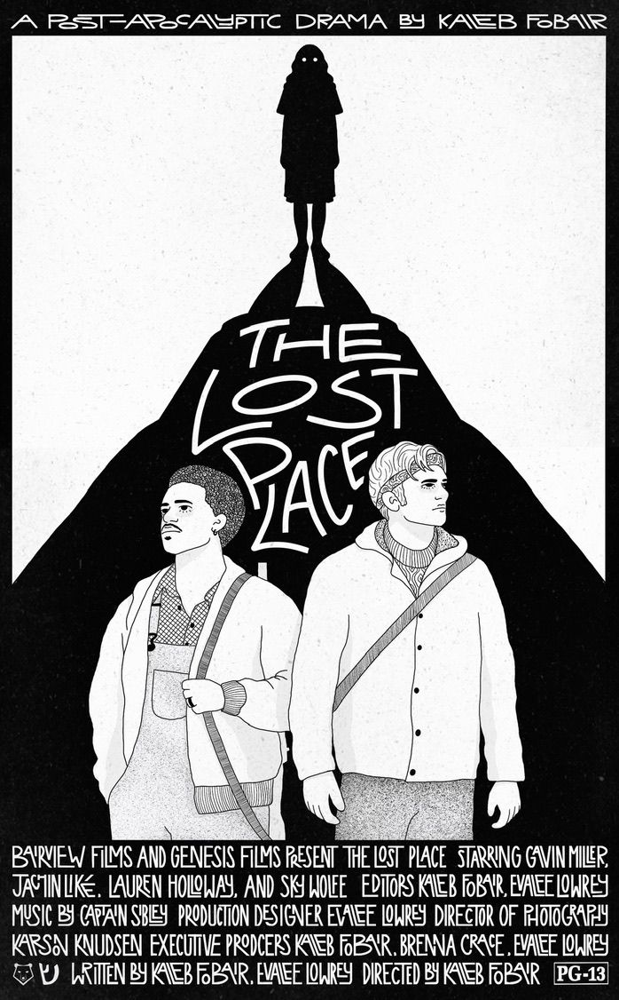

The Lost Place
Drama · 35 min · 2025

In a ruined world, two brothers capture a mysterious woman known as a “Lost One.” As one grows close to her, tension rises—threatening their bond and their survival.
Trailer
Watch the Film
Starring
Gavin Miller, Jachin Liké, Lauren Holloway, Sky Wolfe
Official Selections

